<html>

<head>
<link rel="icon" href="pics/favicon.ico" type="image/x-icon" />
<link rel="shortcut icon" href="pics/favicon.ico" type="image/x-icon" />
<meta http-equiv="Content-Language" content="ru">
<meta http-equiv="Content-Type" content="text/html; charset=utf-8">
<title>Floral Jet Film</title>
<script type="text/javascript" src="fancybox/jquery-1.7.2.min.js"></script>
<script type="text/javascript" src="fancybox/jquery.fancybox-1.3.4.pack.js"></script>
<script language="JavaScript1.2">
<!--
var ns6=document.getElementById&&!document.all?1:0
var head="display:''"
var folder=''
function expandit(curobj){
folder=ns6?curobj.nextSibling.nextSibling.style:document.all[curobj.sourceIndex+1].style
if (folder.display=="none")
folder.display=""
else
folder.display="none"
}
//-->
</script>
<link rel="stylesheet" type="text/css" href="fancybox/jquery.fancybox-1.3.4.css" media="screen" />
<script type="text/javascript" src="fancybox/wnd.js"></script>
</head><style fprolloverstyle>A:hover {color: #FFFFFF}
</style>
</head>

<body link="#308F00" vlink="#308F00" alink="#308F00" bgcolor="#FFFFFF" background="pics/background.png" style="background-attachment: fixed; background-repeat:no-repeat; background-position: center; font-family:arial;" topmargin="0" leftmargin="0" rightmargin="0" bottommargin="0" marginwidth="0" marginheight="0">
<div id="topper" align="center" style="display:none; position:fixed;top:0px;left:0px;width:100%;height:70px;background:#018EFF url('images/background3.png');">
	<p style="line-height: 23px; margin-top: 8px; margin-bottom:0">
	<font face="Arial">
	       <a href="#bb"></a><span lang="en-us">&nbsp;</span> <span lang="en-us">&nbsp;</span><a href="#tt"></a><span lang="en-us">&nbsp;</span> <span lang="en-us">&nbsp;</span><a href="#mm"></a><span lang="en-us">&nbsp;</span> <span lang="en-us">&nbsp;</span><a href="#oo"></a><span lang="en-us">&nbsp;</span> <span lang="en-us">&nbsp;</span><a rel="var2" href="contact.html"></a></p>
</div>
<a name="bb"></a>
</font>
<div align="center">
<p>&nbsp;</p>
</div>

<div id="small-gallery" align="center">
	<table border="0" cellpadding="0" cellspacing="5" width="920" background="pics/background2.png">
		<tr>
			<td>
			<p align="center" style="line-height:150%; margin-left:20px; margin-right:20px; margin-top:30px; margin-bottom:23px">
			<font color="#D70000" face="Arial" size="7">
			<span style="font-weight: 700">Talking Flowers</span></font></p>
			<p align="center" style="margin-top: 15px; margin-bottom: 24px; margin-left:20px; margin-right:20px; line-height:150%">
			<font color="#FF0000" style="font-size: 22pt" face="Arial"><b>
			Start a home business with earnings exceeding 1200%</b></font></p>
			<p align="justify" style="margin-top: 0; margin-bottom: 20px; margin-left:20px; margin-right:20px; line-height:150%">
			<font face="Arial" size="4"><b>Ever heard of talking flowers?</b> Well, here's an opportunity to turn it into a lucrative home business 
with a whopping income potential of over 1200%. Here's the deal: you'll be creating and selling images
designed for transfer onto fresh flowers. These images could be anything from 
			congratulatory messages to photographs or artwork.</font></p>
			<p align="center" style="margin:27px 20px; line-height:150%">
			<font face="Arial">
			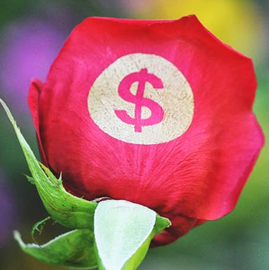</font></p>
			<p align="justify" style="line-height: 150%; margin-left: 20px; margin-right: 20px; margin-top: 0; margin-bottom: 20px">
			<font size="4">All you need to get started is a computer, laptop, or 
			smartphone, a standard inkjet printer, and some special Floral Jet 
			Film material. Each image you produce costs just $0.30 to make, but 
			you can sell them for an average price of $5 each. Crunch the 
			numbers, and you&#39;ll see that this simple home operation could net 
			you over 1200% in profit daily.</font></p>
			<p align="justify" style="line-height: 150%; margin-left: 20px; margin-right: 20px; margin-top: 0; margin-bottom: 20px">
			<b></b><font size="4"><b>The best part?</b> You can drum up business 
			from your social circles, local flower shops, advertisers, and 
			beyond. With your top-notch image quality and a wide pool of 
			potential customers, demand for your products will always be high.</font></p>
			<div align="center">
				<p style="margin-top: 30px; margin-bottom: 24px; margin-left:20px; margin-right:20px">
				<font color="#FF0000" style="font-size: 22pt" face="Arial"><b>
				So, what's the secret sauce behind the success of this idea?</b></font></p>
				<p style="margin-top: 0; margin-bottom: 20px; margin-left:20px; margin-right:20px; line-height:150%" align="justify">
				<font face="Arial" size="4">It's actually pretty straightforward. People turn to fresh flowers all the time as a heartfelt gesture for 
loved ones, family, friends, and coworkers. Just imagine, a single flower adorned with a lovely 
personalized message or a one-of-a-kind image becomes a standout gift and a remarkably potent tool 
for advertising or marketing campaigns.</font></p>
				<p style="margin-top: 29px; margin-bottom: 5px; line-height:150%">
							<font face="Arial">
							<a rel="exa" href="pics/1.jpg">
							</a>&nbsp;
							<a rel="exa" href="pics/2.jpg">
							</a>&nbsp;
							<a rel="exa" href="pics/3.jpg">
							</a>&nbsp;
							<a rel="exa" href="pics/4.jpg">
							</a></font></p>
				<p style="margin-top: 0; margin-bottom: 5px; line-height:150%">
							<font face="Arial">
							<a rel="exa" href="pics/5.jpg">
							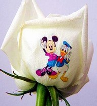</a>&nbsp;
							<a rel="exa" href="pics/6.jpg">
							</a>&nbsp;
							<a rel="exa" href="pics/7.jpg">
							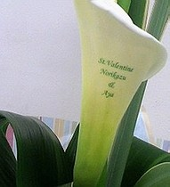</a>&nbsp;
							<a rel="exa" href="pics/8.jpg">
							</a></font></p>
				<p style="margin-top: 0; margin-bottom: 5px; line-height:150%">
							<font face="Arial">
							<a rel="exa" href="pics/9.jpg">
							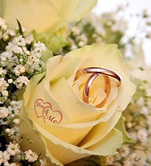</a>&nbsp;
							<a rel="exa" href="pics/10.jpg">
							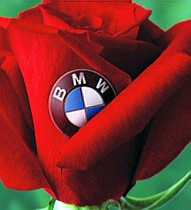</a>&nbsp;
							<a rel="exa" href="pics/11.jpg">
							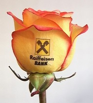</a>&nbsp;
							<a rel="exa" href="pics/12.jpg">
							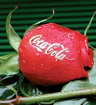</a></font></p>
				<p style="margin-top: 0; margin-bottom: 5px; line-height:150%">
							<font face="Arial">
							<a rel="exa" href="pics/13.jpg">
							</a>&nbsp;
							<a rel="exa" href="pics/14.jpg">
							</a>&nbsp;
							<a rel="exa" href="pics/15.jpg">
							</a>&nbsp;
							<a rel="exa" href="pics/16.jpg">
							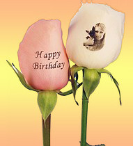</a></font></p>
				<p style="margin-top: 0; margin-bottom: 5px; line-height:150%">
							<font face="Arial">
							<a rel="exa" href="pics/17.jpg">
							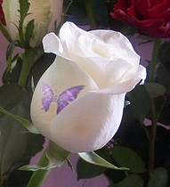</a>&nbsp;
							<a rel="exa" href="pics/18.jpg">
							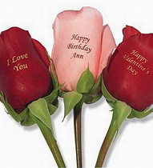</a>&nbsp;
							<a rel="exa" href="pics/19.jpg">
							</a>&nbsp;
							<a rel="exa" href="pics/20.jpg">
							</a></font></p>
				<p style="margin-top: 0; margin-bottom: 25px; line-height:150%">
							<font face="Arial">
							<a rel="exa" href="pics/21.jpg">
							</a>&nbsp;
							<a rel="exa" href="pics/22.jpg">
							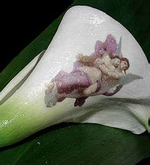</a>&nbsp;
							<a rel="exa" href="pics/23.jpg">
							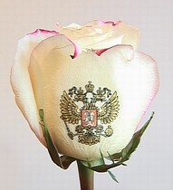</a>&nbsp;
							<a rel="exa" href="pics/24.jpg">
							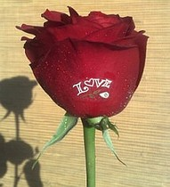</a></font></p>
				<p style="margin-top: 0; margin-bottom: 20px; margin-left:20px; margin-right:20px; line-height:150%" align="justify">
				<font face="Arial" size="4">
				The fresh flower market is enormous, just take a glance at the multitude of shops bustling with 
bouquets being sold daily. What's more, this specific market niche is wide open, devoid of competition,
offering you the chance to transform this ingenious business idea into a steady income stream.</font></p>
				<p style="margin-top: 0; margin-bottom: 20px; margin-left:20px; margin-right:20px; line-height:150%" align="justify">
				<font face="Arial" size="4">Every day, across every city, there's a slew of parties, anniversaries, birthdays, and corporate 
gatherings, all of which demand floral arrangements. Additionally, millions of people exchange flowers
daily. But now, gifting flowers isn't just about beauty; it's about being original, touching, unique, 
memorable, and personal. "Talking Flowers" have the power to elevate any occasion into a beautiful 
and magical personal celebration. It's truly original and breathtaking!</font></p>
				<p style="margin-top: 0; margin-bottom: 20px; margin-left:20px; margin-right:20px; line-height:150%" align="justify">
				<font face="Arial" size="4">
				Flowers adorned with inscriptions, photographs, and images aren't just for gifting or embellishing 
weddings, birthdays, and anniversaries; they also serve as a remarkable advertising medium. From 
branding enterprises or products to featuring intricate designs like company logos or product 
photography, even extending to invitations for corporate events or elections, the possibilities are 
endless.</font></p>
				<p style="margin-top: 0; margin-bottom: 20px; margin-left:20px; margin-right:20px; line-height:150%" align="justify">
				<font size="4">The versatility of &quot;Talking Flowers&quot; knows no 
				bounds, ensuring a vast and ever-expanding market. It&#39;s 
				<a name="tt"></a>abundantly clear that fresh flowers bearing images and 
				inscriptions on their petals aren&#39;t merely an intriguing idea 
				whose time has come, they represent a business venture with 
				immense commercial potential.</font></p>
				<p style="margin-top: 30px; margin-bottom: 24px; margin-left:20px; margin-right:20px; line-height:150%">
				<font color="#FF0000" style="font-size: 22pt" face="Arial"><b>
				Manufacturing and imaging technology</b></font></p>
				<p style="margin-top: 0; margin-bottom: 30px; margin-left:20px; margin-right:20px; line-height:150%" align="justify">
				<span style="vertical-align: inherit">
				<font face="Arial" size="4">To bring images to life on living flowers, you'll need to employ manufacturing and imaging technology.
First off, you'll print the images using an inkjet printer onto specialized Floral Jet Film material. Then, 
it's a matter of cutting out the image, roughly following its contours, affixing it onto the flower petal, 
moistening it with water, and after a brief 10-second wait, carefully removing the protective backing. Following these straightforward steps will result in a vibrant, high-quality image adorning the petal of a
living flower.</font></span></p>
				<table border="0" cellpadding="0" cellspacing="0" width="752" height="370">
					<tr>
						<td width="72">&nbsp;</td>
						<td>
						<p align="center" style="margin-top: 0; margin-bottom: 0; line-height:150%">
						<font face="Arial">
						<iframe width="750" height="416" src="https://www.youtube.com/embed/gUgLoV9q7-E?si=zTgUQAhG6dYrB0ec" title="YouTube video player" frameborder="0" allow="accelerometer; autoplay; clipboard-write; encrypted-media; gyroscope; picture-in-picture; web-share" referrerpolicy="strict-origin-when-cross-origin" allowfullscreen></iframe></font></p>
						</td>
						<td width="72">&nbsp;</td>
					</tr>
				</table>
				<p style="margin-top: 30px; margin-bottom: 20px; margin-left:20px; margin-right:20px; line-height:150%" align="justify">
				<span style="vertical-align: inherit">
				<font face="Arial" size="4">The Floral Jet Film material boasts a unique feature: once an image is applied to a flower, the material 
becomes virtually invisible upon close inspection, leaving only the clear image behind. Whether it's 
wishes, congratulations, invitations, pictures, or photographs, they can all be effortlessly printed and 
affixed onto roses, lilies, tulips, orchids, and a variety of other fresh flowers, anytime you wish.</font></span></p>
				<p style="margin-top: 0; margin-bottom: 20px; margin-left:20px; margin-right:20px; line-height:150%" align="justify">
				<font face="Arial" size="4">You have the flexibility to create your own images, source them online, commission a designer, or even
utilize images provided by your clients. Consumables for Floral Jet Film come complete with step-bystep <a name="mm"></a>instructions and a catalog featuring images on a wide range of popular topics, ensuring a seamless 
process from start to finish.</font></p>
				
				<p style="margin-top: 30px; margin-bottom: 24px; margin-left:20px; margin-right:20px; line-height:150%">
				<font color="#FF0000" style="font-size: 22pt" face="Arial"><b>
				Wondering about potential earnings?</b></font></p>
				<p style="margin-top: 0; margin-bottom: 20px; margin-left:20px; margin-right:20px; line-height:150%" align="justify">
				<font face="Arial" size="4">Once you've mastered this straightforward technology and kick-started your sales, you could be earning
daily income right from the comfort of your own home. This emerging business niche is rapidly 
gaining traction worldwide. Your only expenses for this venture are the purchase of Floral Jet Film 
consumables, printer cartridges, and advertising.</font></p>
				<p style="margin-top: 0; margin-bottom: 20px; margin-left:20px; margin-right:20px; line-height:150%" align="justify">
				<font face="Arial" size="4">Preparing one image for transfer onto fresh flowers will set you back only between $0.30 to $0.70, 
depending on the cost of the Floral Jet Film consumables. When sold in bulk (orders of 1000 or more 
images), each printed image can fetch an average price of $2, while personalized texts or photographs 
can command a retail price of up to $10 per image. On average, you can expect to sell each printed 
image for around $5</span>.</font></p>
				<p style="margin-top: 0; margin-bottom: 20px; margin-left:20px; margin-right:20px; line-height:150%" align="justify">
				<font face="Arial" size="4">Our Floral Jet Film consumables are available in standard packages of 10, 50, and 400 sheets, with the 
price per sheet varying based on the order volume. Opting for a package of 400 sheets is the most costeffective choice, as it offers the lowest price per sheet. Meanwhile, a package of 50 sheets is less 
economical, and a pack of 10 sheets, although pricier, is ideal for familiarizing yourself with the 
technology and handling trial orders.</font></p>
				<p style="margin-top: 0; margin-bottom: 20px; margin-left:20px; margin-right:20px; line-height:150%" align="justify">
				<font face="Arial" size="4">Naturally, you're keen on maximizing your business's income potential, so, let's delve into an example 
to illustrate just how lucrative purchasing a pack of 400 sheets can be.</font></p>
				<p style="margin-top: 0; margin-bottom: 20px; margin-left:20px; margin-right:20px; line-height:150%" align="justify">
				<font face="Arial" size="4">
				<b>
				<span lang="en-us">&nbsp;
				</span>Let's take a look at an example scenario:</b></font></p>
				<p style="margin-top: 0; margin-bottom: 20px; margin-left:20px; margin-right:20px; line-height:150%" align="justify">
				<font face="Arial" size="4">Say you invest in a package of 400 sheets of Floral Jet Film consumables for $12,000, making the cost 
per sheet just $30. Typically, one sheet can accommodate around 100 images, resulting in a total of 
40,000 finished images. With an average selling price of $5 per image, your revenue would amount to 
$200,000. Here's the breakdown:</font></p>
				<p style="margin-top: 0; margin-bottom: 10px; margin-left:20px; margin-right:20px; " align="justify">
				<font face="Arial" size="4"><b>1. </b>Cost of purchasing 400 sheets of Floral Jet Film - $12,000</font></p>
				<b>
				<p style="margin-top: 0; margin-bottom: 10px; margin-left:20px; margin-right:20px; " align="justify">
				<font face="Arial" size="4"><b>2.</b> </font></b>
				<font face="Arial" size="4">Cost of cartridges for printing 400 sheets - $200</font></p>
				<p style="margin-top: 0; margin-bottom: 10px; margin-left:20px; margin-right:20px; " align="justify">
				<font face="Arial" size="4"><b>3.</b> Advertising expenses - $5,000</font></p>
				<b>
				<p style="margin-top: 0; margin-bottom: 20px; margin-left:20px; margin-right:20px; line-height:150%" align="justify">
				<font face="Arial" size="4">4. </font></b>
				<font face="Arial" size="4">Profit from selling 400 sheets (40,000 finished images) - $200,000</font></p>
				<b>
				<p style="margin-top: 0; margin-bottom: 20px; margin-left:20px; margin-right:20px; line-height:150%" align="justify">
				<b><font face="Arial" size="4">This leaves you with a net income of $182,800.</font></b></p>
				</b>
				<p style="margin-top: 0; margin-bottom: 20px; margin-left:20px; margin-right:20px; line-height:150%" align="justify">
				<font face="Arial" size="4">Printing 400 sheets (an average of 40,000 images) typically takes around 16 hours. With effective 
advertising, you could potentially sell all 40,000 images in as little as one month.</font></p>
				<b>
				<p style="margin-top: 30px; margin-bottom: 24px; margin-left:20px; margin-right:20px; line-height:150%">
				<font color="#FF0000" style="font-size: 22pt" face="Arial">Who might be interested in your offerings?</font></p>
				</b>
				<p style="margin-top: 0; margin-bottom: 20px; margin-left:20px; margin-right:20px; line-height:150%" align="justify">
				<font face="Arial" size="4">Well, "Talking Flowers", printed images ready to be effortlessly transferred onto real flowers, represent
a completely unique and novel product. While there's currently no competition in this niche, the 
potential client base is vast. To maximize your earnings, we recommend tapping into various avenues:</span></b></font><b></p>
				<p style="margin-top: 0; margin-bottom: 15px; margin-left:20px; margin-right:20px; line-height:150%" align="justify">
				<font face="Arial" size="4">
				Social Media</font></p>
				</b>
				<p style="margin-top: 0; margin-bottom: 20px; margin-left:20px; margin-right:20px; line-height:150%" align="justify">
				<font face="Arial" size="4">Leverage social commerce as a straightforward way to launch your business. Set up a sales channel on 
platforms like Facebook, Instagram, or other social networks. Populate it with captivating photos of 
flowers adorned with images, post regularly, build your follower base, utilize paid advertising, and 
watch the orders roll in daily. The cost per printed image ordered can range from $5 to $10, while your 
production cost could be as low as $0.30 to $0.70</span>.</font></p>
				<b>
				<p style="margin-top: 0; margin-bottom: 15px; margin-left:20px; margin-right:20px; line-height:150%" align="justify">
				<font face="Arial" size="4">
				Online Marketplaces</font></p>
				</b>
				<p style="margin-top: 0; margin-bottom: 20px; margin-left:20px; margin-right:20px; line-height:150%" align="justify">
				<font face="Arial" size="4">Explore numerous online trading platforms like Amazon, eBay, and others where you can post ads. 
Offer a range of ready-made images suitable for transfer onto fresh flowers, spanning popular themes 
like love, holidays, congratulations, and more. Your potential clientele could include individuals and 
businesses alike. Depending on the quantity ordered, you could price your final product as low as $2 
per printed image.</font></p>
				<b>
				<p style="margin-top: 0; margin-bottom: 15px; margin-left:20px; margin-right:20px; line-height:150%" align="justify">
				<font face="Arial" size="4">
				 Online Stores</font></p>
				</b>
				<p style="margin-top: 0; margin-bottom: 20px; margin-left:20px; margin-right:20px; line-height:150%" align="justify">
				<font face="Arial" size="4">Consider creating your very own online store or application to showcase and sell your products. Here, 
you can offer your clients an extensive array of images, ranging from popular to exclusive ones. Prices 
can vary from $2 to $10 per printed image, depending on the quantity ordered.</font></p>
				<p style="margin-top: 0; margin-bottom: 20px; margin-left:20px; margin-right:20px; line-height:150%" align="justify">
				<font face="Arial" size="4">Your online store operates round the clock, seven days a week, allowing you to reach customers not 
just locally, but globally. Thanks to the compact and lightweight nature of printed images, fulfilling 
orders by regular mail in envelopes is a breeze.</font></p>
				<p style="margin-top: 0; margin-bottom: 20px; margin-left:20px; margin-right:20px; line-height:150%" align="justify">
				<font face="Arial" size="4">Additionally, forging partnerships with various online 
stores can yield excellent sales opportunities. This route doesn't even necessitate building your own 
website. The internet offers a straightforward means of connecting with potential customers and 
boosting daily sales.</font></p>
				<b>
				<p style="margin-top: 0; margin-bottom: 15px; margin-left:20px; margin-right:20px; line-height:150%" align="justify">
				<font face="Arial" size="4">
				Flower Shops (Online and Offline)</font></p>
				</b>
				<p style="margin-top: 0; margin-bottom: 20px; margin-left:20px; margin-right:20px; line-height:150%" align="justify">
				<font face="Arial" size="4">Every city boasts shops where fresh flowers are sold daily. By applying images to flowers, you can 
enhance the store's profit margin by $5 to $10 per flower sold. Moreover, it entices customers to return,
as they can purchase not just flowers, but a unique gift that warrants a higher price tag. Offering this 
unique service sets you apart from competitors and adds value to your product.</font></p>
				<p style="margin-top: 0; margin-bottom: 20px; margin-left:20px; margin-right:20px; line-height:150%" align="justify">
				<font face="Arial" size="4">Online flower shops, as well as retailers and wholesalers of fresh flowers, may be interested in 
purchasing images in bulk from you, starting at $2 each. Upon establishing a partnership, you supply 
printed sheets featuring images on popular themes like love, holidays, weddings, and celebrations.</font></p>
				<p style="margin-top: 0; margin-bottom: 20px; margin-left:20px; margin-right:20px; line-height:150%" align="justify">
				<font face="Arial" size="4">During the flower selection process, the seller presents the option to adorn the chosen flowers with a 
congratulatory inscription or image. The buyer selects an image, such as "Happy Birthday" or "I Love 
You," and in just 10 to 20 seconds, the seller applies the image to the flower, earning an additional $10. 
It's quick, visually appealing, and, of course, profitable!</font></p>
				<p style="margin-top: 0; margin-bottom: 20px; margin-left:20px; margin-right:20px; line-height:150%" align="justify">
				<font face="Arial" size="4">Furthermore, the sight of "Talking Flowers" is sure to pique curiosity, attracting new customers to the 
store. This translates to free advertising and a fresh influx of clients for your business.</font></p>
				<b>
				<p style="margin-top: 0; margin-bottom: 15px; margin-left:20px; margin-right:20px; line-height:150%" align="justify">
				<font face="Arial" size="4">
				Trading Retail Network</font></p></b>
				<p style="margin-top: 0; margin-bottom: 20px; margin-left:20px; margin-right:20px; line-height:150%" align="justify">
				<font face="Arial" size="4">Consider selling printed images as sets, distributing them to various retail chains, ranging from gas 
stations to supermarkets. Stores are constantly seeking to diversify their product offerings, while 
customers are always on the lookout for new and intriguing items. This presents a golden opportunity 
for store owners to secure a steady stream of additional income.</font></p>
				<p style="margin-top: 0; margin-bottom: 20px; margin-left:20px; margin-right:20px; line-height:150%" align="justify">
				<font face="Arial" size="4">To facilitate buyers in selecting images
suitable for specific occasions and applying them to flowers, create vibrant packages containing 
multiple images (for instance, three different images with a "Happy Birthday" theme) accompanied by 
simple instructions.</font></p>
				<p style="margin-top: 0; margin-bottom: 20px; margin-left:20px; margin-right:20px; line-height:150%" align="justify">
				<font face="Arial" size="4">Craft an unforgettable package, launch promotional campaigns, and voilà, you 
become the purveyor of a novel product fetching $10 for every image package sold.</font></p>
				<p style="margin-top: 0; margin-bottom: 15px; margin-left:20px; margin-right:20px; line-height:150%" align="justify">
				<b>
				<font face="Arial" size="4">
				Advertising Companies</font></p>
				</b>
				<p style="margin-top: 0; margin-bottom: 20px; margin-left:20px; margin-right:20px; line-height:150%" align="justify">
				<font face="Arial" size="4">Floral branding holds immense potential but has yet to gain widespread traction, given its novelty. By 
seizing this opportunity promptly, you could land consistent large orders for producing advertising 
images from companies, guaranteeing you a stable income of $2 for each printed image.</font></p>
				<b>
				<p style="margin-top: 0; margin-bottom: 15px; margin-left:20px; margin-right:20px; line-height:150%" align="justify">
				<font face="Arial" size="4">
				Event Companies</font></p>
				</b>
				<p style="margin-top: 0; margin-bottom: 13px; margin-left:20px; margin-right:20px; line-height:150%" align="justify">
				<font face="Arial" size="4">Companies specializing in organizing festivities, weddings, special occasions, and government events 
will undoubtedly be keen on collaborating with you.</font></p>
				<p style="margin-top: 0; margin-bottom: 13px; margin-left:20px; margin-right:20px; line-height:150%" align="justify">
				<font face="Arial" size="4">In any domain where flowers serve as gifts, 
accessories, or decorations (such as concerts, weddings, corporate events, banquets, state elections, 
etc.), they can be embellished with congratulatory inscriptions and various images. As such, providers 
of event services, hotels, concert venues, exhibition centers, and educational institutions emerge as 
potential clients, placing regular orders for pre-made images priced at $2 and above.</font></p>
				<p style="margin-top: 0; margin-bottom: 15px; margin-left:20px; margin-right:20px; line-height:150%" align="justify">
				<font face="Arial" size="4"><b>
				Photography Studios</b></font></p>
				<p style="margin-top: 0; margin-bottom: 20px; margin-left:20px; margin-right:20px; line-height:150%" align="justify">
				<font face="Arial" size="4">Partnering with photography studios opens up even more avenues. Here, the emphasis lies in printing 
photographs on demand for subsequent application by clients onto fresh flowers. With effective 
advertising, this service could garner significant popularity, as few gifts are as personal as a flower 
adorned with a photo of a couple or loved one. The price for such an image can soar up to $20, 
presenting lucrative opportunities</span>.</font></p>
				<b>
				<p style="margin-top: 30px; margin-bottom: 24px; margin-left:20px; margin-right:20px; line-height:150%">
				<font color="#FF0000" style="font-size: 22pt" face="Arial">Major business benefits</font></p>
				</b>
				<p style="margin-top: 0; margin-bottom: 20px; margin-left:20px; margin-right:20px; line-height:150%" align="justify">
				<font face="Arial" size="4">Considering all the aspects discussed, the primary advantages of Floral Jet Film technology can 
be summarized as follows:</font></p>
				<b>
				<p style="margin-top: 0; margin-bottom: 15px; margin-left:20px; margin-right:20px; line-height:150%" align="justify">
				<font face="Arial" size="4">
				Risk-Free</font></p>
				</b>
				<p style="margin-top: 0; margin-bottom: 20px; margin-left:20px; margin-right:20px; line-height:150%" align="justify">
				<font face="Arial" size="4">There's no need to gamble with your finances or fret over product defects. The image 
adheres snugly to the petal and can be easily removed without harming the flower, allowing for hasslefree adjustments.</font></p>
				<b>
				<p style="margin-top: 0; margin-bottom: 15px; margin-left:20px; margin-right:20px; line-height:150%" align="justify">
				<font face="Arial" size="4">
				Work from Anywhere</font></p>
				</b>
				<p style="margin-top: 0; margin-bottom: 20px; margin-left:20px; margin-right:20px; line-height:150%" align="justify">
				<font face="Arial" size="4">Enjoy the flexibility of working from home or the office without the need for
additional rental space. With just a computer, an inkjet printer, and Floral Jet Film supplies, you're all 
set to kickstart your business whenever you please. </font></p>
				<b>
				<p style="margin-top: 0; margin-bottom: 15px; margin-left:20px; margin-right:20px; line-height:150%" align="justify">
				<font face="Arial" size="4">
				Swift and Effortless</font></p></b>
				<p style="margin-top: 0; margin-bottom: 20px; margin-left:20px; margin-right:20px; line-height:150%" align="justify">
				<font face="Arial" size="4">Applying the image to a flower takes less than 10 seconds. Simply print the 
images onto Floral Jet Film, and your client can easily cut out the image, affix it to the flower petal, 
moisten it, and peel off the protective backing in a matter of seconds.</font></p>
				<b>
				<p style="margin-top: 0; margin-bottom: 15px; margin-left:20px; margin-right:20px; line-height:150%" align="justify">
				<font face="Arial" size="4">
				High Profit Margins</font></p>
				</b>
				<p style="margin-top: 0; margin-bottom: 20px; margin-left:20px; margin-right:20px; line-height:150%" align="justify">
				<font face="Arial" size="4">Depending on the quantity of Floral Jet Film consumables purchased, the cost 
of printing one image ranges from $0.30 to $0.70. Even if you sell ready-made images for just $2 
(though the average market price is $5), your income will surpass your expenses by nearly sevenfold!</font></p>
				<b>
				<p style="margin-top: 0; margin-bottom: 15px; margin-left:20px; margin-right:20px; line-height:150%" align="justify">
				<font face="Arial" size="4">
				Portability</font></p>
				</b>
				<p style="margin-top: 0; margin-bottom: 20px; margin-left:20px; margin-right:20px; line-height:150%" align="justify">
				<font face="Arial" size="4">Thanks to Floral Jet Film, the Talking Flower business is incredibly mobile. For instance,
40,000 printed images weigh no more than 11 pounds, allowing them to be easily packed into a regular 
plastic bag and dispatched via courier or mail.</font></p>
				<b>
				<p style="margin-top: 0; margin-bottom: 15px; margin-left:20px; margin-right:20px; line-height:150%" align="justify">
				<font face="Arial" size="4">
				Versatility</font></p>
				</b>
				<p style="margin-top: 0; margin-bottom: 20px; margin-left:20px; margin-right:20px; line-height:150%" align="justify">
				<font face="Arial" size="4">Images can take the form of text, pictures, or photographs and can be applied to any part 
of the flower, including inside the bud, such as a rose. Just envision the awe-inspiring surprise when 
that rose blooms!</font></p>
				<b>
				<p style="margin-top: 30px; margin-bottom: 24px; margin-left:20px; margin-right:20px; line-height:150%">
				<font color="#FF0000" style="font-size: 22pt" face="Arial">How to start your business</font></p>
				</b>
				<p style="margin-top: 0; margin-bottom: 20px; margin-left:20px; margin-right:20px; line-height:150%" align="justify">
				<span style="vertical-align: inherit">
				<font face="Arial" size="4">Starting your business is a breeze with just a few essentials: Floral Jet Film material, a computer or 
smartphone, and a standard inkjet printer. The printing process mirrors that of printing on regular paper,
making it user-friendly even for beginners.</font></span></p>
				<p style="margin-top: 0; margin-bottom: 20px; margin-left:20px; margin-right:20px; line-height:150%" align="justify">
				<font size="4" face="Arial">Floral Jet Film comes in standard packs of 10, 50, and 400 sheets, each containing a complimentary 
library of images covering a wide array of popular topics. Additionally, you'll receive detailed, step-bystep instructions for creating images and a marketing plan to kickstart your business.</font></p>
				<p style="margin-top: 0; margin-bottom: 20px; margin-left:20px; margin-right:20px; line-height:150%" align="justify">
				<font face="Arial" size="4">If you're dipping your toes into this venture for the first time, you can opt for a modest 10-sheet pack of
Floral Jet Film. With this initial investment, you could rake in approximately $5000 in profit.</font></p>
				<p style="margin-top: 0; margin-bottom: 20px; margin-left:20px; margin-right:20px; line-height:150%" align="justify">
				<font face="Arial" size="4">For a more substantial start, consider the 50-sheet package of Floral Jet Film. This choice could yield 
around $25,000 in earnings.</font></p>
				<p style="margin-top: 0; margin-bottom: 20px; margin-left:20px; margin-right:20px; line-height:150%" align="justify">
				<font face="Arial" size="4">For the most effective business launch, however, the 400-sheet package is the way to go. Not only does
this <a name="oo"></a>offer the lowest price per sheet of Floral Jet Film, but it also promises the highest profit potential, 
potentially reaching a whopping $200,000.</font></p>
				<b>
				<p style="margin-top: 30px; margin-bottom: 24px; margin-left:20px; margin-right:20px; line-height:150%">
				<font color="#FF0000" style="font-size: 22pt" face="Arial">You can purchase Floral Jet Film here</font></p>
				</b>
				<p style="margin-top: 0; margin-bottom: 20px; margin-left:20px; margin-right:20px; line-height:150%" align="justify">
				<b><font size="4">To purchase Floral Jet Film material, simply 
				follow these steps:</font></b></p>
				<p style="margin-top: 0; margin-bottom: 10px; margin-left:20px; margin-right:20px; " align="justify">
				<font face="Arial" size="4"><b>1. </b>Select the desired quantity of material</font></p>
				<b>
				<p style="margin-top: 0; margin-bottom: 10px; margin-left:20px; margin-right:20px; " align="justify">
				<font face="Arial" size="4">2. </font></b>
				<font face="Arial" size="4">Click on the "Order Now" button</font></p>
				<p style="margin-top: 0; margin-bottom: 10px; margin-left:20px; margin-right:20px; " align="justify">
				<font face="Arial" size="4"><b>3.</b> Contact us to place your order or inquire further</font></p>
				<b>
				<p style="margin-top: 0; margin-bottom: 20px; margin-left:20px; margin-right:20px; line-height:150%" align="justify">
				<font face="Arial" size="4">4. </font></b>
				<font face="Arial" size="4">Our manager will promptly address all your queries and assist you in selecting the most suitable 
payment and delivery options</font></p>
				<p style="margin-top: 0; margin-bottom: 25px; margin-left:20px; margin-right:20px; line-height:150%" align="justify">
				<font size="4" face="Arial">Upon completion of your payment, a courier service will swiftly deliver the package containing Floral 
Jet Film consumables directly to your doorstep, no matter where you are in the world. Additionally, 
you'll receive a link to download the image library, manufacturing instructions, and a comprehensive 
business plan to help you get started on the right foot.</font></p>
				<b>
				<table border="0" cellspacing="0" cellpadding="0" width="94%">
					<tr>
						<td width="33%" align="center" valign="top">
				<font face="Arial">
				<a rel="var" href="order10.html">
				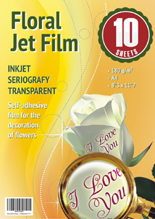</a></font><p style="margin-top: 14px; margin-bottom: 12px">
							<font face="Arial" size="4"><b>10</b> sheets / <b>
							1000</b> images</font></p>
							<div align="center">
								<table border="0" cellpadding="0" cellspacing="0" height="40" style="margin-top: 10; margin-right:-10">
									<tr>
										<td bgcolor="#FFFF00">
										<p align="center" style="margin-top: 2px; margin-bottom: 0; margin-left:12px; margin-right:12px">
										<font color="#FF0000"><b>
										<font face="Arial" size="5">
										$5</b>,<b>000</b></font><font face="Arial" size="5">
										Profit</font></font></td>
									</tr>
								</table>
							</div>
							<p style="margin-top: 10px">
				<b>
	<font face="Arial">
	<a rel="var" href="order10.html">
	</a></font></td>
						<td width="33%" align="center" valign="top">
				<font face="Arial">
				<a rel="var" href="order50.html">
				</a></font><p style="margin-top: 14px; margin-bottom: 12px">
							<font face="Arial" size="4"><b>50</b> 
							sheets / <b>
							5000</b> 
							images</font></p>
							<div align="center">
								<table border="0" cellpadding="0" cellspacing="0" height="40" style="margin-top: 10">
									<tr>
										<td bgcolor="#FFFF00">
										<p align="center" style="margin-top: 2px; margin-bottom: 0; margin-left:12px; margin-right:12px">
										<font color="#FF0000"><b>
										<font face="Arial" size="5">
										$25</b>,<b>000</b></font><font face="Arial" size="5">
										Profit</font></font></td>
									</tr>
								</table>
							</div>
							<p style="margin-top: 10px; margin-bottom: 8px">
	<font face="Arial">
	<a rel="var" href="order50.html">
	</a></font></td>
						<td width="33%" align="center" valign="top">
				<font face="Arial">
				<a rel="var" href="order400.html">
				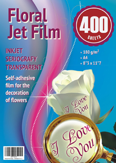</a></font><p style="margin-top: 14px; margin-bottom: 12px">
							<font face="Arial" size="4"><b>400</b> 
							sheets / <b>
							40000</b> 
							images</font></p>
							<div align="center">
								<table border="0" cellpadding="0" cellspacing="0" height="40" style="margin-top: 10; margin-left:-10">
									<tr>
										<td bgcolor="#FFFF00">
										<p align="center" style="margin-top: 2px; margin-bottom: 0; margin-left:12px; margin-right:12px">
										<font color="#FF0000"><b>
										<font face="Arial" size="5">
										$200</b>,<b>000</b></font><font face="Arial" size="5">
										Profit</font></font></td>
									</tr>
								</table>
							</div>
							<p style="margin-top: 10px">
	<font face="Arial">
	<a rel="var" href="order400.html">
	</a></font></td>
					</tr>
				</table>
				<div align="center">
					<div align="center">
						<table border="0" cellpadding="0" cellspacing="0" width="100%">
							<tr>
								<td align="center" valign="top">
	<p style="margin-left: 8px; margin-right: -15px; margin-top: -20px; margin-bottom: -10px">
	&nbsp;</td>
								<td align="center" valign="top">
	<p style="margin-left: -25px; margin-right: -25px; margin-top: -20px; margin-bottom: 0">
	&nbsp;</td>
								<td align="center" valign="top">
	<p style="margin-left: -15px; margin-right: 8px; margin-top: -20px; margin-bottom: -10px">
	&nbsp;</td>
							</tr>
						</table>
					</div>
				</div>
			</div>
			</td>
		</tr>
	</table>
</div>
<p align="center"><font face="Arial"><font color="#FFFFFF">Floral Jet Film © 2024. 
All rights reserved. </font> <a rel="var22" href="rules.html">
<font color="#FFFFFF">Rules</font></a><font color="#FFFFFF">.</font></font></p>
<script>$(function(){$(window).scroll(function() { var top = $(document).scrollTop();
if (top > 15) $('#topper').fadeIn(400);  else $('#topper').fadeOut(400); });});</script>
</body>
</html>